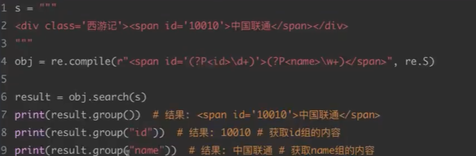

爬虫学习
爬虫学习20241001
web请求过程
1 | 服务器(SERVER)渲染：在服务器直接将数据和html整合在一起，统一返回给浏览器 |
协议
http协议
1 | http协议（超文本传输协议）是用于从万维网（www）服务器传输超文本到本地浏览器的传送协议。（浏览器与服务器之间数据交互遵循的就是http协议） |
http协议下的请求和响应
1 | 请求: |
http请求方式
1 | GET：显性提交 |
request模块
1 | request是python常用的爬虫模块 |
解析html三大常用模块
re正则表达式
1 | 正则表达式re（regular Expression）模块是python中运行效率最高、速度最快、准确性高的解析模块，但入门程度高 |
常用元字符
1 | . 匹配除换行符以外的任意字符 |
量词
1 | * 出现零次或更多次 |
贪婪匹配和惰性匹配
1 | .* 贪婪匹配（尽可能多的匹配） |
正则中的内容单独提取

1 | 这里可以看到通过使用分组来对正则匹配到的内容进一步进行筛选 |
python中的re模块
1 | python中常用的re模块函数 |
BS4
1 | BS4通过html标签和属性来定位数据 |
1 | BS4主要函数用BeautifulSoup(html文本) |
Xpath
1 | xpath用到python中的lxml模块中的etree，etree中的xpath |
requests进阶
1 | 1.模拟浏览器登录->处理cookie |
cookie
1 | 记录身份的一个机制 |
防盗链
1 | 一般网页源代码跟实际页面的代码是不一样的。 |
代理
1 | 原理：通过第三方的机器去发送请求 |
本博客所有文章除特别声明外，均采用 CC BY-NC-SA 4.0 许可协议。转载请注明来自 Xiaoye456的个人博客！